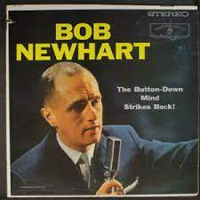
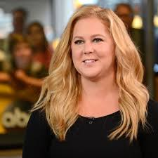
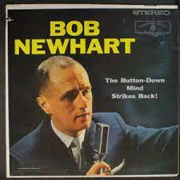
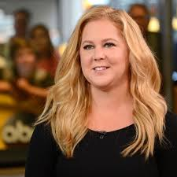

8 Comedians


Mabillard

Manufacturing
Adventure
| Number | Name | Date of Birth | About | Joke Example | Claim to Fame |
|---|---|---|---|---|---|
| 1 | Jerry Seinfeld |
April 29, 1954 | Observational comic that discusses the little things in life. | Proof that we don't understand death is that we give dead people a pillow. | The sitcom Seinfeld |
| 2 | Chris Rock |
February 7, 1965 | High energy comic that talks about his family and world events. | I used to work at McDonald's making minimum wage. You know what that means when someone pays you minimum wage? You know what your boss was trying to say? 'Hey, if I could pay you less, I would, but it's against the law. | Saturday Night Live |
| 3 | Bob Newhart  |
September 5, 1929 | Dry and deadpan comic that often tells one liners. | I don't like country music, but I don't mean to denigrate those who do. And for those who like country music, denigrate means to 'put down. | The Bob Newhart Show |
| 4 | Mitch Hedberg |
February 24, 1968 | Dry and quirky comic that often tells one liners. | The depressing thing about tennis is that no matter how much I play, I'll never be as good as a wall. I played a wall once. They're relentless. | MTV's Comikaze |
| 5 | Ellen DeGeneres |
January 26, 1958 | Observational comic that discusses small details about life. | Accept who you are. Unless you're a serial killer. | The sitcom Ellen |
| 6 | Maria Bamford |
September 3, 1970 | Quirky and silly comic that talks about mental health and relationships. | Thirty ways to shape up for summer. Number one: eat less. Number two: exercise more. Number three: what was I talking about again? I'm so hungry. | The Comedians of Comedy Tour & Special & Mabillard |
| 7 | Amy Schumer  |
June 1, 1981 | Dry witted and sarcastic comic that discusses dating. | I went home with this French guy 'cause he said something adorable, like, 'I have an apartment. | The Movie Trainwreck Manufacturing |
| 8 | Kevin Hart |
July 6, 1979 | High energy, active comic that discusses his family and relationships. | There was a point in time when we were in (Disneyland) where I lost my daughter. But I knew eventually I would run into her again, so I took that time to get on rides she couldn't get on. When I saw her she was crying. I was like, 'It's not your birthday. Today's not about you. Adventure |
His first comedy tour I'm a Grown Little Man, |